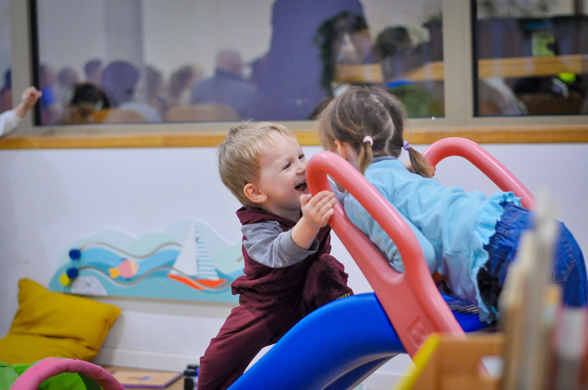

Истории
"
Я приехала, не зная никого. Здесь меня встретили — и впервые за долгое время я почувствовала себя как дома.
Социальные и интеграционные программы, направленные на поддержку беженцев, эмигрантов и их детей в Германии.




Мы — Mission Europa Resource, зарегистрированная некоммерческая организация (e.V.) в Гуммерсбахе. Помогаем украиноязычным семьям найти своё место и почувствовать себя дома в новой стране. Создаём пространство, где можно сориентироваться, найти своих и ощутить принадлежность.
С 2022 года проводим встречи, мероприятия и программы поддержки для украинских беженцев и иммигрантов — взрослых и детей. За это время наши мероприятия посетили по меньшей мере от 3 до 6 тысяч участников.
Подробнее о командеМы помогаем пройти путь от растерянности к ощущению дома — как маяк ведёт корабль к берегу.

Я приехала, не зная никого. Здесь меня встретили — и впервые за долгое время я почувствовала себя как дома.
Зарегистрированный gemeinnützig Verein — пожертвования официально признаются налогово вычитаемыми. Spendenbescheinigung по запросу.